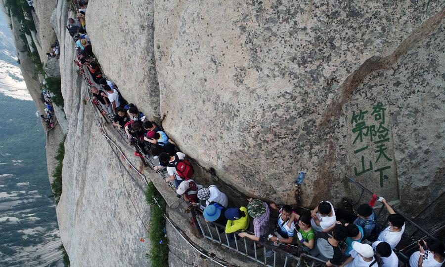

華山（亦稱太華山，「華」字古亦作「崋」），五嶽之一，又稱西嶽。位於中國陝西省渭南市華陰市城南，西距西安市區120公里，秦、晉、豫黃河三角洲交匯處，南接秦嶺，北瞰黃河，扼西北進出中原之門戶。華山山體倚天拔地，四面如削，更有千尺幢、百尺峽、蒼龍嶺、鷂子翻身、長空棧道等十分險峻之地，被譽為“奇險天下第一山”。華山共有五峰，即東峰朝陽，西峰蓮花，中峰玉女，南峰落雁，北峰雲台。南峰落雁，為太華極頂，海拔2154.9米；西峰最險，海拔2082米；北峰最低，海拔1614.7米。另外，南峰落雁、東峰朝陽，西峰蓮花，合稱“天外三峰”。
華山同時也是道教名山，是三十六洞天中的第四洞天。華山自古以來就是負有盛名的勝地，傳說蕭史在此吹簫引來秦穆公女弄玉傾慕，隋唐孫思邈常入華山採藥，北宋即有睡仙陳摶隱居於此。 1982年，華山以“陝西華山風景名勝區”的名義，被中華人民共和國國務院批准列入第一批國家重點風景名勝區名單，其遊覽面積約150平方公里。
華山又名西嶽，與東岳泰山並稱。據說是因周平王遷都洛陽，華山位於東周京城洛邑之西，故稱“西嶽”，以後秦王朝建都咸陽，西漢王朝建都長安，都在華山之西，所以華山不再稱西嶽。後來漢光武帝劉秀在洛陽建立東漢政權，華山又恢復了“西嶽”之稱，並一直沿用至今。 “西”是指地處中原的西邊，而“岳”是中國五大名山的總稱。華山是五嶽中最年輕的山脈，據地質部門1984年觀測，目前它還在繼續增高。
北魏地理學家酈道元在《水經註》中，對華山有“其高五千仞，削成而四方，遠而望之，又若花狀”的描繪。古代“花”與“華”相通，可見華山之名實際上得自於形狀。王安石在〈遊褒禪山記〉一文則紀錄了在華山上「華陽洞」旁百餘步，有碑仆道，其文漫滅，獨其為文猶可識曰：「花山」，王安石據此推測讀為「華實」之「華」者，是字音訛誤。關於華山得名，還有另一種說法：因華山頂上生長著白蓮花，故而得名。韓癒的《古意》詩中所寫的“太華峰頂玉井蓮，花開十丈藕如船”，就是根據此傳說。民間對其險峻有諸多描繪，最著名的諺語為“自古華山一條路”。
from Wikipedia